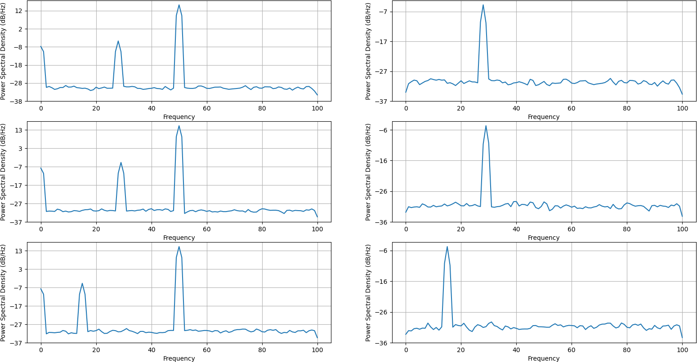

Common Average Re-Referencing#
- basic.car.run(data)#
Applies common average re-referencing.
- Parameters:
data – Channels x samples.
- Returns:
Common average re-referenced data.
The following example shows how to apply car.
import numpy as np
import finn.basic.common_average_rereferncing as car
import matplotlib
matplotlib.use("Qt5agg")
import matplotlib.pyplot as plt
import random
def main():
#Configure sample data
channel_count = 256
frequency = [random.randint(5, 50) for _ in range(channel_count)]
data_range = np.arange(0, 10000)
frequency_sampling = 200
#Configure noise data
frequency_noise = 50
shared_noise_strength = 10
random_noise_strength = 1
#Generate some sample data
raw_data = [None for _ in range(channel_count)]
for idx in range(channel_count):
genuine_signal = np.sin(2 * np.pi * frequency[idx] * data_range / frequency_sampling)
shared_noise_signal = np.sin(2 * np.pi * frequency_noise * data_range / frequency_sampling)
* shared_noise_strength
random_noise_signal = np.random.random(len(data_range)) * random_noise_strength
raw_data[idx] = genuine_signal + shared_noise_signal + random_noise_signal
raw_data = np.asarray(raw_data)
car_data = car.run(raw_data)
#visualize result
(fig, axes) = plt.subplots(3, 2)
fig.suptitle("Peaks are supposedly at %i, %i and %iHz" % (frequency[0], frequency[1], frequency[2]))
for idx in range(3):
axes[idx, 0].psd(raw_data[idx, :], NFFT = frequency_sampling, Fs = frequency_sampling)
axes[idx, 1].psd(car_data[idx, :], NFFT = frequency_sampling, Fs = frequency_sampling)
plt.show(block = True)
main()
While there is an artifact at 50Hz on the left side (pre car application), this artifact is gone on the right side. As this artifact was introduced by the shared reference, applying a car filter removed the artifact:
